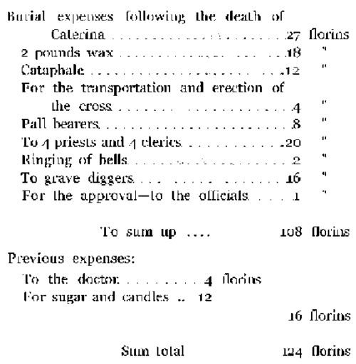

Chapter III. Part 4
Description
This section is from the book "Leonardo Da Vinci: A Psychosexual Study Of An Infantile Reminiscence", by Sigmund Freud. Also available from Amazon: Leonardo da Vinci: A Psychosexual Study of an Infantile Reminiscence.
Chapter III. Part 4
In this diary, which like the diaries of other mortals often skims over the most important events of the day widi only a few words or ignores them altogedier, one finds a few entries which on account of their peculiarity are cited by all of Leonardo's biographers. They show notations referring to the master's petty expenses, which are recorded widi painful exactitude as if coming from a pedantic and stricdy parsimonious family fadier, while there is nodiing to show that he spent greater sums, or diat die artist was well versed in household management. One of these notes refers to a new cloak which he bought for his pupil Andrea Salaino:"
Silver brocade.............. | .Lira 15 | Soldi 4 |
Crimson velvet for trimming .. | " 9 | " 0 |
Braid.................... | . ." 0 | 9 |
Buttons.................. | . ." 0 | " 12 |
Another very detailed notice gives all the expenses which he incurred through the bad qualities and the thieving tendencies of another pupil or model: "On 21st day of April, 1490, I started diis book and started again the horse." Jacomo came to me on Magdalene day, 1490, at die age of ten years (marginal note: thievish, mendacious, willful, gluttonous). On die second day I ordered for him two shirts, a pair of pants, and a jacket, and as I put the money away to pay for the things named he stole die money from my purse, and it was never possible to make him confess, although I was absolutely sure of it (marginal note: 4 Lira ...)." So the report continues concerning the misdeeds of die little boy and concludes with the expense account: "In the first year, a cloak. Lira 2: 6 shirts, Lira 4: 3 jackets. Lira 6: 4 pair of socks. Lira 7, etc.'"1
Leonardo's biographers, from whom nothing was furtiier than to solve the riddle in the psychic life of their hero from these slight get thereby that it is not Leonardo's behavior diat needs an explanation, but the fact that he left us diese testimonies of it. As it is impossible to ascribe to him the motive of smuggling into our hands proofs of his kindness, we must assume diat anodier affective motive caused him to write this down. It is not easy to conjecture what diis motive was, and we could not give any if not for another account found among Leonardo's papers which throws a brilliant light on diese peculiarly petty notices about his pupils' clothes, and others of a kind:2
The writer Merejkowski is die only one who can tell us who this Caterina was. From two different short notices he concludes that she was die modier of Leonardo, die poor peasant woman from Vinci, who came to Milan in 1493 to visit her son dien 41 years old. While on this visit she fell ill and was taken to die hospital by Leonardo, and following her death she was buried by her son with a sumptuous funeral.'3
This deduction of the psychological writer of romances is not capable of proof, but it can lay claim to so many inner probabilities, it agrees so well with everything we know besides about Leonardo's emotional activity that I cannot refrain from accepting it as correct. Leonardo succeeded in forcing his feelings under the yoke of investigation and in inhibiting their free utterance, but even in him there were episodes in which the suppression obtained expression, and one of these was die deadi of his mother whom he once loved so ardendy. Through diis account of the burial expenses he represents to us the mourning of his mother in an almost unrecognizable distortion. We wonder how such a distortion could have come about, and we certainly cannot grasp it when viewed under normal mental processes. But similar mechanisms are familiar to us under die abnormal conditions of neuroses, and especially in the so-called compulsion neurosis. Here one can observe how the expressions of more intensive feelings have been displaced to trivial and even foolish performances. The opposing forces succeeded in debasing the expression of these repressed feelings to such an extent that one is forced to estimate the intensity of diese feelings as extremely unimportant, but die imperative compulsion with which these insignificant acts express diemselves betrays the real force of the feelings which are rooted in die unconscious, which consciousness would wish to disavow. Only by bearing in mind the mechanisms of compulsion neurosis can one explain Leonardo's account of the funeral expenses of his mother. In his unconscious he was still tied to her as in childhood, by erotically tinged feelings; die opposition of the repression of this childhood love which appeared later stood in the way of erecting to her in his diary a different and more dignified monument, but what resulted as a compromise of diis neurotic conflict had to be put in operation and hence the account was entered in the diary which dius came to the knowledge of posterity as something incomprehensible.
It is not venturing far to transfer the interpretation obtained from die funeral expenses to the accounts dealing widi his pupils. Accordingly we would say diat here also we deal with a case in which Leonardo's meager remnants of libidinous feelings compulsively obtained a distorted expression. The mother and the pupils, the very images of his own boyish beauty, would be his sexual objects—as far as his sexual repression dominating his nature would allow such manifestations—and die compulsion to note with painful circumstantiality his expenses on their behalf, would designate die strange betrayal of his rudimentary conflicts. From diis we would conclude diat Leonardo's love-life really belonged to that type of homosexuality die psychic development of which we were able to disclose, and the appearance of the homosexual situation in his vulture-fantasy would become comprehensible to us, for it states nothing more or less dian what we have asserted before concerning diat type. It requires the following interpretation: Through the erotic relations to my modier I became a homosexual.'1
Continue to:
- prev: Chapter III. Part 3
- Table of Contents
- next: Chapter IV
Tags
Leonardo da Vinci, Sigmund Freud, mentality, psychoanalytic, sexuality